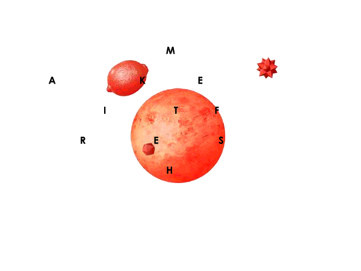
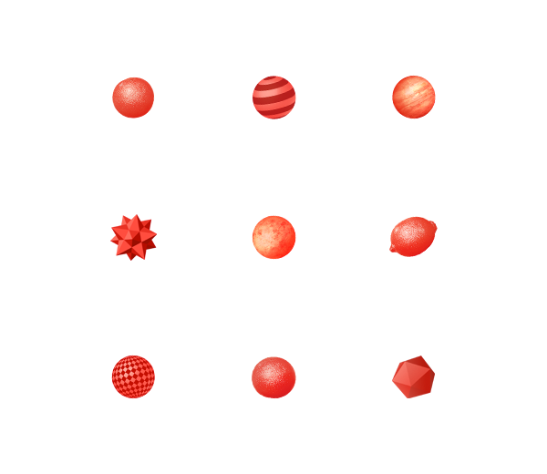
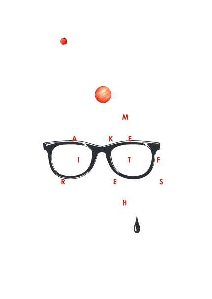
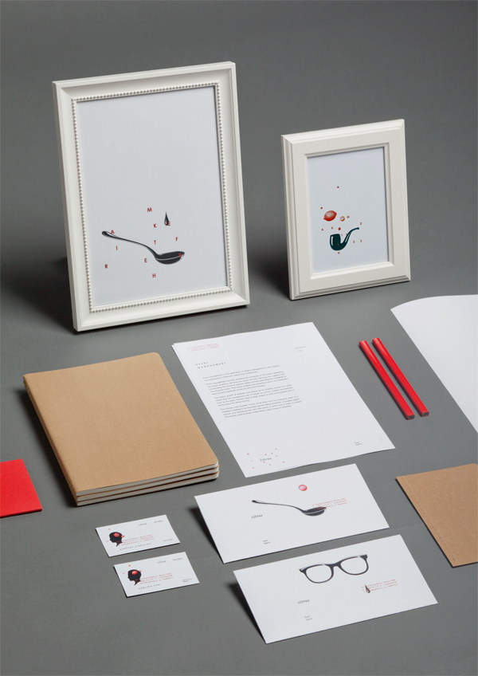
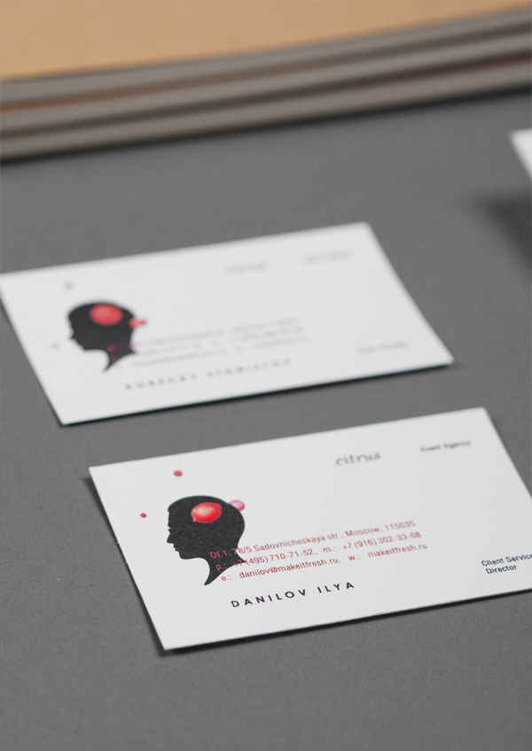

Artists are visionaries. We routinely practice a form of faith, seeing clearly and moving toward a creative goal that shimmers in the distance—often visible to us, but invisible to those around us.
Julia Cameron
Artists are visionaries. We routinely practice a form of faith, seeing clearly and moving toward a creative goal that shimmers in the distance—often visible to us, but invisible to those around us.
Julia Cameron


Visual direction, branding and product design for the Brazilian cycling brand Kirschener created by Made By Six.
This is proof that dramatic music can make anything interesting. Skip ahead to 1:43 for the most intense moment in the slinky’s journey.
Via kottke.org
When launching a new [digital] product, let’s focus more on discussing its PURPOSE and less UI details and features.
Via swissmiss
This sandbox created by UC Davis is equipped with an Xbox Kinect camera and projector to create hands on museum exhibits as an education tool for freshwater lake and watershed science.
Soon screens will no longer be trapped by a device, where we can manipulate projections in front of us, like some display on a science-fiction starship. A time when we’ll design for data rather than devices. In a way, we’re halfway there — designing for four corners, no matter the size and not for any specific device. The future is creeping around the corner, it’ll be interesting to see how we meet it.
A selection of tools, libraries, and APIs for creating interactive and dynamic data visualizations.
For all its valuation, the social network is just another ad-supported site. Without an earth-changing idea, it will collapse and take down the Web.
I still believe that Facebook will find their way and innovate in ways we can’t imagine, but they have an uphill battle to fight on the advertising front. The challenge is equally their advertising model as well as educating advertisers on how to get the most out of the platform.
As of right now my money is on Tumblr and even Twitter that they will find an advertising model that works well for brands and the community of users.
Uncertainty is an uncomfortable position. But certainty is an absurd one.
Voltaire
Photographer Tadao Cern captures faces with an industrial strength blower focused on their heads. See more on the shots and experiments on Tadao’s personal Facebook page.
Found on Behance
It’s in the subtle details, thoughtful tweening and “whoopass” audio by Box of Toys where the magic happens in this just-for-fun project by weare17.

Cleaver ad and beautifully executed art direction for Bahrain’s equivalent of the Yellow Pages. Created by Supparat Thepparat. See the Behance project for more process images and full credits .
Distraction is the only thing that consoles us for miseries and yet it is itself the greatest of our miseries.
Blaise Pascal
From Zen Focus’ article Three Little Habits to Find Focus





Created with a pallet of illustrations and graphics, Moscow event agency Citrus’ new dynamic identity system comes across as both fresh and playful. Created by Roma Erohnovich.
The only critique I have with the animated version is that the tweening could use a bit of love.
“A science fiction story about what you see when you die. Or: the Singularity, ruined by lawyers.” Created by Tom Scott
The latest Desktop Wallpaper Project submission on The Fox is Black features one of the geometric landscapes created by Timothy J. Reynolds. Check out more of his rendered landscapes on Dribbble.
Paying attention in a distracted world: it’s like bringing a gun to a knife fight.
James Shelley
Until we can get Twitter, Facebook, Google Plus, and Pinterest to sign a peace treaty and standardize on a common size for share buttons, their mismatched and unaligned buttons will continue to be a thorn in every designer’s side.
For now our best bet is to simply roll your own button with a share count for each service. Today I did a bit of digging and put together a quick Gist to get share counts using the platform’s APIs.
Check out Sharrre if you want a jQuery plugin that covers all the share buttons and much more.
The quality of your UX shows how much your respect or disrespect your customers
Alexis Ohanian - co-founder of Reddit, Hipmunk and Breadpig


Last week while we were in NYC for Behance’s 99% Conference I fell in love with Visual Supply Co’s new VSCO CAM iPhone app. With minimal processing options VSCO CAM does a great job emulating the film styles for the likes of Kodak Tri-X, Fuji Superia, Ilford HP5 and many others. Here are a few shots I captured while exploring the city. Follow me on Instagram for other examples.